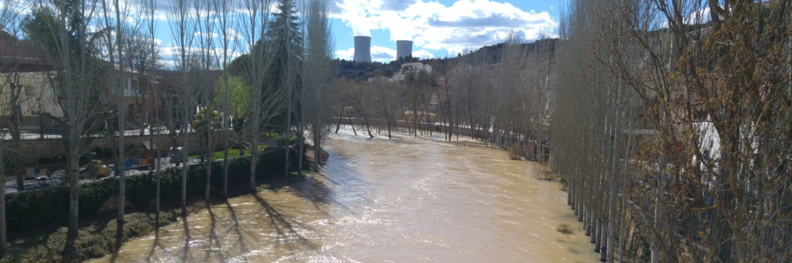

Europese waterstaat
Posted on January 1, 2019 at 12:00 PM

Veel Europeanen hebben last van natte voeten gehad, en erger. GroenLinks pleit voor grensoverschrijdende afstemming van het waterbeheer. Een Europese waterstaatautoriteit is nodig om de bijna jaarlijkse overstromingen te voorkomen.
Er is vanuit het buitenland veel belangstelling voor het Nederlandse waterschapsmodel en de kennis en ervaring die de waterschappen hebben. De waterschappen kunnen andere landen helpen door hun expertise te delen. Ook kunnen zij de Nederlandse exportpositie stimuleren door samen te werken met Nederlandse bedrijven. Daarnaast doen waterschappen door samenwerking met andere landen ook nieuwe kennis op, die zij kunnen toepassen in Nederland. Steeds vaker kampen lidstaten van de EU met hoge waterstanden en overstromingen van met name de rivieren Donau, Elbe, Rijn, Maas en Schelde. Voor een deel kan dit probleem worden verklaard uit het ontbreken van een omvattend waterbeheer. Zo halen onze zuiderburen opgelucht adem als het Maaswater pas bij Borgharen buiten haar oevers treedt. De Roo, vice-voorzitter van de milieucommissie, vindt dat het hoog tijd wordt voor serieus waterbeheer op Europees niveau.
Voor het beheer van de kwantiteit zijn lidstaten nu onbevoegd terwijl afstemming van retentiegebieden en uiterwaarden op regionaal, nationaal niveau en, bij grensoverschrijdende rivieren, Europees niveau noodzakelijk is. Zorgvuldigheid en duurzaamheid moeten daarbij voorop staan. Als er geen grensoverschrijdende afstemming komt, houden we in Europa benedenstrooms de verwoestende werking van het wassende water zoals we in 2002 met de Elbe, de Donau hebben gehad bijvoorbeeld.
De Taag is volgens experts ecologisch gezien een van de rivieren die er het slechts aan toe is op het Iberische Schiereiland. Overheveling zou alleen toegestaan mogen worden bij voldoende water, vroeger diende niet als gegarandeerde watervoorziening en was overheveling ook een optie. Nu bestaat er zelfs een wet dat zodra er een overschot aan water is, de autoriteiten de plicht hebben water over te hevelen. Zo is het nu onmogelijk water op te slaan om droge periodes het hoofd te bieden.
Een overstromingsmodel voor het estuariene gebied werd vastgesteld voor verschillende terugkeerperioden voor zowel de huidige als de toekomstige gemiddelde zeespiegel. Aangezien de lozing van de Taag geen invloeg heeft op de estuariene waterstand in de onderste 40 km van het estuarium, werd de gemiddelde stroming in de voorspelling meegenomen. De bepaling van de overstromingsgevoelige gebieden de afbakening van het gebied dat aan de kwetsbaarheidsbeoordeling zou worden onderworpen.
In het figuur hiernaast is het plan opgegeven voor effectieve hulpmiddelen voor de waterveiligheid.